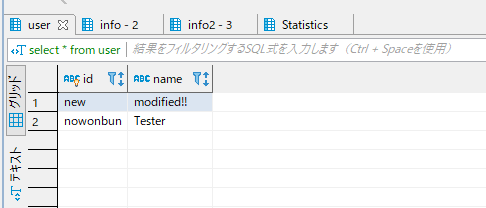

[CakePHP] Transactionを使う方法とEntityクラスを利用してInsert、Update、Deleteする方法
こんにちは。明月です。
この投稿はPHPのCakeフレームワークでTransactionを使う方法とEntityクラスを利用してInsert、Update、Deleteする方法に関する説明です。
以前、CakePHPのフレームワークを利用せずに、データベースにInsertやUpdate、Deleteに関して説明したことがあります。
link - [CakePHP] データベース(MariaDB(Mysql))を接続する方法
でも、我々はデータ無欠性のため、トランザクションを使うし、Fetch機能でオブジェクト単位でデータを追加する方法で実装しなければならないです。
テーブルの例は以前の投稿を続けて利用します。
link - [CakePHP] ORMのテーブルFetch設定
Userテーブルでデータを入力する後、派生テーブルのInfoテーブルのデータを入力します。そしてInfo2テーブルのデータを入力することで考えましょう。
UserテーブルのキーとInfoテーブルの外部キーが自動生成するタイプじゃなく、nvarcharタイプのユーザかUserテーブルのキーとInfoテーブルの外部キーが自動生成するタイプじゃなく、nvarcharタイプのユーザから取得するデータなのでUserテーブルをInsertした後InfoテーブルをInsertすることの順番で問題ありません。
でも、Info2のテーブルの場合はInfoテーブルのキーで外部キーが結んでいますが、この場合は自動生成タイプなのでInfoテーブルがinsertした後、キーを検索してInfo2テーブルに入力しなければならないです。
この順番のテーブル入力する作業が多いと思えば、ソースがすごく複雑になるでしょう。
また、データベース処理する中でエラーが発生する時、全てをロールバックしなければならないですが、それ時にトランザクション(transaction)を利用すればできるでしょう。
<?php
namespace App\Controller;
use Cake\Datasource\ConnectionManager;
use Cake\ORM\TableRegistry;
use Cake\Core\Exception\Exception;
class HomeController extends AppController {
public function index() {
// connectionマネージャーからconnectionを取得する。
$connection = ConnectionManager::get('default');
// トランザクション処理
$connection->transactional(function ($conn) {
// トランザクション中でエラーがなければcommitになるし、エラーが発生する時にrollbackになる。
});
}
}
CakePHPフレームワークではトランザクションがオブザーバーパターンにもう実装されています。JavaやC#はパターンを実装しましたが。。
トランザクションを利用してデータを入力しましょう。
<?php
namespace App\Controller;
use Cake\Datasource\ConnectionManager;
use Cake\ORM\TableRegistry;
class HomeController extends AppController {
public function index() {
// connectionマネージャーからconnectionを取得する。
$connection = ConnectionManager::get('default');
//トランザクション
$connection->transactional(function ($conn) {
// Userテーブルのレジストリを取得
$userTable = TableRegistry::get('User');
// Entityを生成する。
$user = $userTable->newEntity();
// idカラムに「new」を入力してnameカラムに「new Name」を入力する。
$user->id = "new";
$user->name = "new Name";
// 格納(transactionの中でエラーが発生しなければ、格納される。)
$userTable->save($user);
// Infoテーブルのレジストリを取得
$infoTable = TableRegistry::get('Info');
// Entityを生成する。
$info = $infoTable->newEntity();
// Userクラスからidを取得してInfoクラスに外部キーを設定する。
$info->id = $user->id;
$info->age = 10;
// 格納(transactionの中でエラーが発生しなければ、格納される。)
$infoTable->save($info);
// Info2テーブルのレジストリを取得
$info2Table = TableRegistry::get('Info2');
// Entityを生成する。
$info2 = $info2Table->newEntity();
// Infoクラスのidxを取得してInfo2クラスの外部キーに設定する。
$info2->info_idx = $info->idx;
$info2->birth = 10;
// 格納(transactionの中でエラーが発生しなければ、格納される。)
$info2Table->save($info2);
});
}
}
上の例でInfoテーブルの場合は外部キー(id)に入力するデータにはEntityデータの「id」で設定するので別にデータベースから受取るのはありませんが、Info2テーブルの場合はInfoテーブルの外部キーが自動生成のキーなのでInfoデータがinsertした後のデータをデータベースから受け取らければならないです。
実際にtransation中で「$info->idx」キーがありませんが、「$info2->info = $info->idx」を設定することで、連携することが出来ます。
今回はUpdateとDeleteです。
UpdateとDeleteはデータベースからデータを修正や削除することで一応検索してデータを取得します。
<?php
namespace App\Controller;
use Cake\Datasource\ConnectionManager;
use Cake\ORM\TableRegistry;
class HomeController extends AppController {
public function index() {
// connectionマネージャーからconnectionを取得する。
$connection = ConnectionManager::get('default');
// トランザクション
$connection->transactional(function ($conn) {
// Userテーブルのレジストリを取得
$table = TableRegistry::get('User');
// Query式を取得
$query = $table->find();
// idが「new」のデータを検索する。
$query = $query->where(['id' => 'new']);
// データを取得する。
$user = $query->first();
// nameを修正する。
$user->name = "modified!!";
// 格納(transactionの中でエラーが発生しなければ、格納される。)
$table->save($user);
});
}
}

上のデータを取得してEntityインスタンスのnameのデータを修正してsave関数を呼出したらデータベースに格納されています。
<?php
namespace App\Controller;
use Cake\Datasource\ConnectionManager;
use Cake\ORM\TableRegistry;
use Cake\Core\Exception\Exception;
class HomeController extends AppController {
public function index() {
// connectionマネージャーからconnectionを取得する。
$connection = ConnectionManager::get('default');
// トランザクション
$connection->transactional(function ($conn) {
// Userテーブルのレジストリを取得
$table = TableRegistry::get('User');
// Query式を取得
$query = $table->find();
// idが「new」のデータを検索する。
$query = $query->where(['id' => 'new']);
// データを取得
$user = $query->first();
// 派生データを全て削除する。
// Infoテーブルを繰り返す。
foreach($user->infos as $info) {
// Info2テーブルを繰り返す。
foreach($info->info2s as $info2) {
// Info2テーブルのデータを削除(transactionの中でエラーが発生しなければ、格納される。)
TableRegistry::get('Info2')->delete($info2);
}
// Infoテーブルのデータを削除(transactionの中でエラーが発生しなければ、格納される。)
TableRegistry::get('Info')->delete($info);
}
// Userテーブルデータを削除(transactionの中でエラーが発生しなければ、格納される。)
$table->delete($user);
});
}
}
削除されたことを確認できました。
ここまでPHPのCakeフレームワークでTransactionを使う方法とEntityクラスを利用してInsert、Update、Deleteする方法に関する説明でした。
ご不明なところや間違いところがあればコメントしてください。
- [CakePHP] Errorページを設定する方法2020/02/20 03:00:00
- [CakePHP] Transactionを使う方法とEntityクラスを利用してInsert、Update、Deleteする方法2020/02/19 03:00:00
- [CakePHP] ORMのテーブルFetch設定2020/02/18 03:00:00
- [CakePHP] Cakeフレームワークでデータベースに接続する時に使うQuery式とEntityクラス、Tableクラス、ResultSet2020/02/17 08:16:23
- [CakePHP] データベース(MariaDB(Mysql))を接続する方法2020/02/14 03:00:00
- [PHP] namespaceとuse2020/02/13 03:00:00
- [CakePHP] RequestとResponseに関して2020/02/12 03:00:02
- [CakePHP] PHPのCakeからAjax要請がある時、jsonタイプ(json_encode関数)でResponseする方法とControllerでViewを選択する方法2020/02/08 03:00:00
- [CakePHP] MVCフレームワークのCakeをインストールする方法2020/02/07 03:00:02
- [PHP] 自動require及びincludeをする方法(spl_autoload_register)2020/02/05 03:00:00
- [PHP] 匿名関数(ラムダ式)とクロージャ(closure)2020/02/04 03:00:00
- [PHP] PHPのコーディング領域とデザイン領域を分離するテンプレートライブラリ Smarty2020/02/02 03:00:00
- [PHP] Reflection - Variable編2020/02/01 03:00:00
- [PHP] Reflection - Method編2020/01/31 03:00:00
- [PHP] Reflection - Class編2020/01/30 03:00:00
- [C#] Reflectionを利用してクラス複製する方法2020/04/17 00:34:33
- [C#] XMLをXPathを利用してデータを取得する方法2020/04/16 00:47:17
- [C#] NSoupライブラリを利用してXMLとHTMLをパーシングする方法2020/04/14 19:34:15
- [C#] 日付フォーマット2020/04/09 20:53:20
- [C#] ログライブラリ(log4net)を設定する方法2020/04/08 13:04:22
- [C#] Zipの圧縮ファイルを解凍するコードを作成する方法2020/04/07 11:17:44
- [C#] Zip圧縮コードを作成する方法2020/04/06 14:56:13
- [C#] 数字フォーマット(お金表示及び小数点以下表示)2020/04/03 00:38:37
- [C#] コマンド(cmd)を実行する方法(Processクラス)2020/03/31 07:15:40
- [C#] FTPに接続してファイルダウンロード、アップロードする方法2020/03/27 19:20:14
- [C#] HttpWebRequestを利用してウェブページを読み込みする方法2020/03/27 00:23:19
- [C#] Base64のエンコード、デコードする方法2020/03/26 02:19:50
- [Java] 日付フォーマット(SimpleDateFormat)を使う方法2020/03/25 00:36:53
- [Java] サーブレット(Servlet)の環境でファイルアップロード(プログレスバーでファイルアップロード状態を表示する方法)する方法2020/03/24 00:48:21
- [Java] Spring環境でファイルアップロード(プログレスバーでファイルアップロード状態を表示する方法)する方法2020/03/22 23:15:12